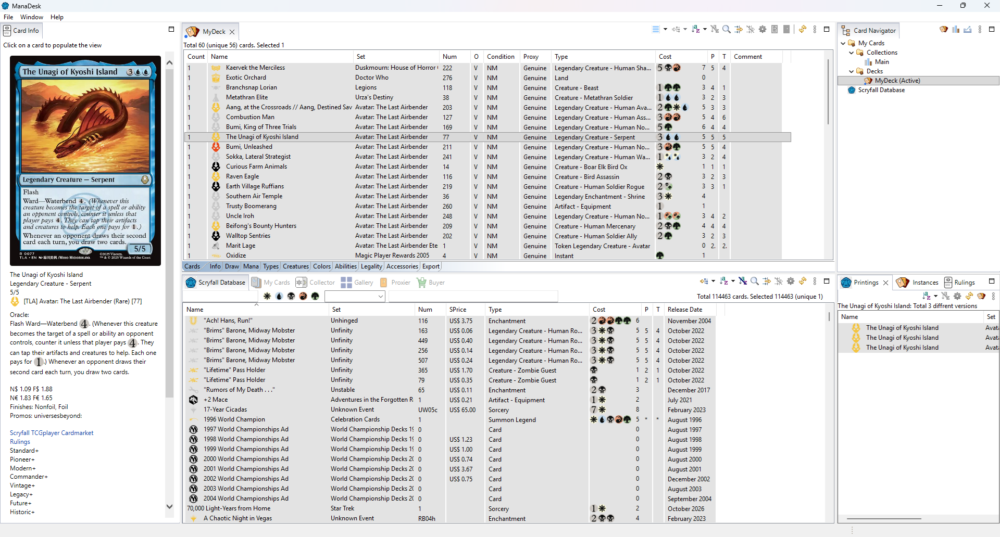

The ManaDesk window is made of views. Each view shows one thing (a deck, the card database, the selected card...), and views are grouped in zones, as tabs.

| Zone | Views | What it is for |
|---|---|---|
| Left | Card Info | The selected card: image, text, prices, legality. |
| Top center | Your decks and collections | Each open deck or collection gets its own tab here. |
| Center | Scryfall Database, My Cards, Collector, Gallery, Proxier, Buyer | The main lists: all cards, all your cards, set completion, what to print and buy. |
| Top right | Card Navigator | The tree of your decks, collections and folders. Double-click to open one. |
| Bottom right | Rulings, Printings, Instances | More about the selected card: its rulings, all its printings, and where your copies are. |
Every ManaDesk view always opens in its zone. If you drag a view somewhere else, it goes back to its zone the next time you start ManaDesk.
The Card Navigator shows My Cards, with two folders: Decks and Collections. You can create sub-folders in each. Right-click to create, open, rename or delete a deck, a collection or a folder.
Small colored dots on the icons of decks and collections (in the Card Navigator, on the tabs and in the dialogs) show their status at a glance:
| Marker | Meaning |
|---|---|
| Blue (bottom left) | Virtual: the list holds cards you don't own (virtual decks, Wishlist/To Print collections). An owned deck has no blue marker. |
| Red (bottom middle) | Read-only: the list is locked; it can't be changed until you unlock it. |
| Green (bottom right) | Unsorted: a collection that keeps its manual order (see Unsorted collections). |
| Black (top left) | Boxed: a deck you have physically put together (see Boxed decks). |
Most views show cards in a list, and all lists work the same way: click a column header to sort, use Group By to group, the filter buttons to narrow the list, and right-click for the actions. See Browsing the card database and Searching and filtering.
The full list is in Menus and commands.
See also: Views reference · Quick tour